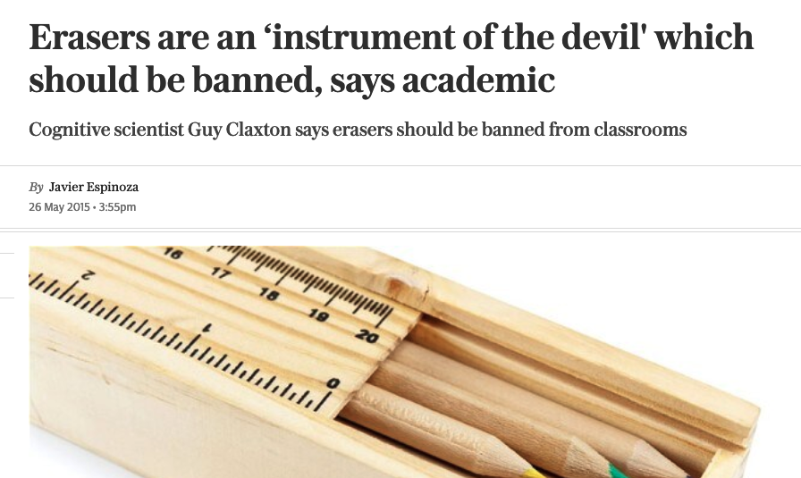
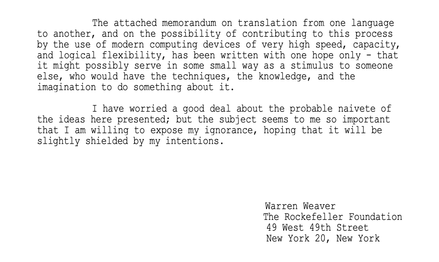
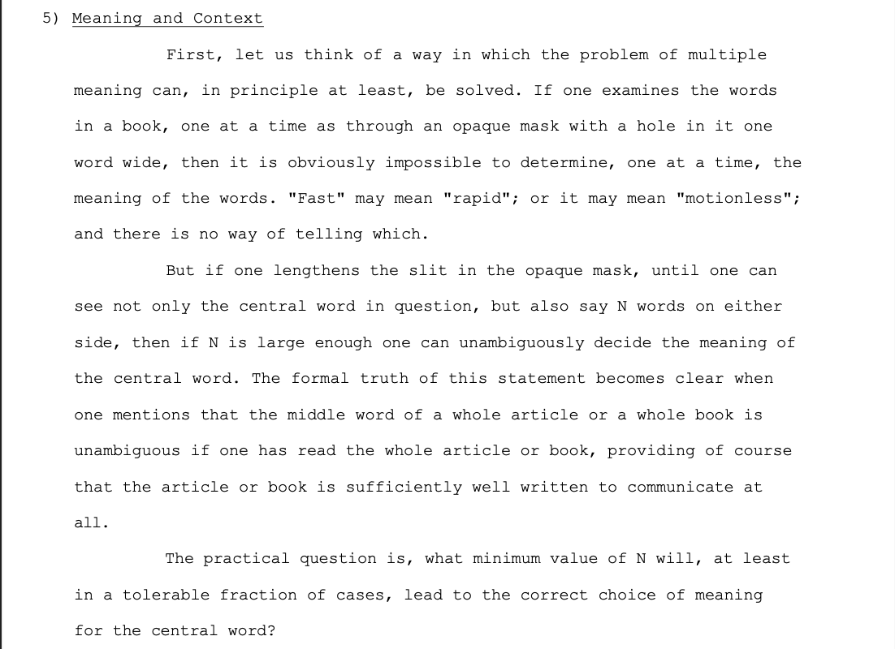
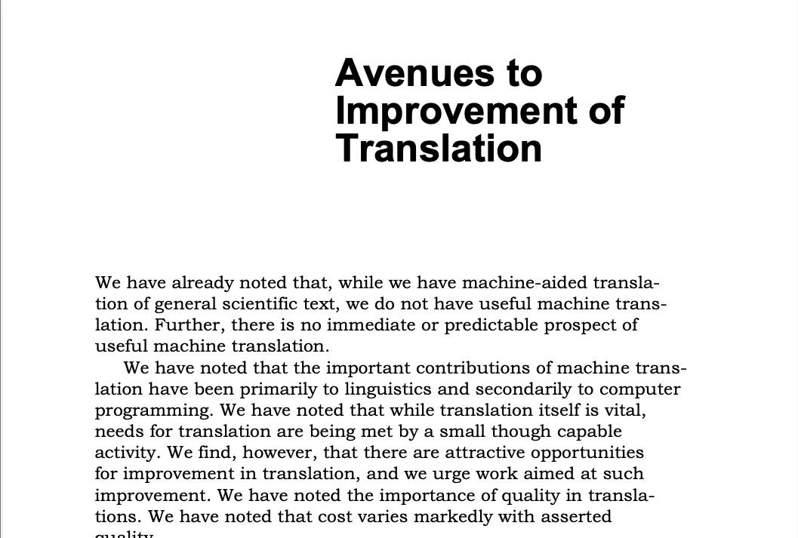
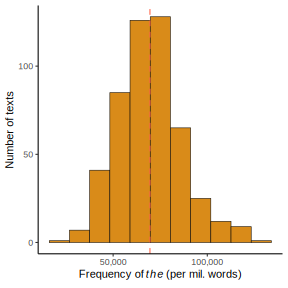
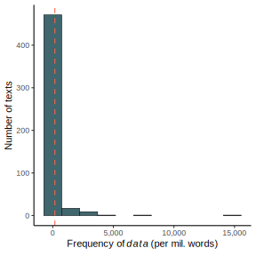

![]()
| ID | Category Name | Number of Texts |
|---|---|---|
| A | Press: Reportage | 44 |
| B | Press: Editorial | 27 |
| C | Press: Reviews | 17 |
| D | Religion | 17 |
| E | Skill And Hobbies | 36 |
| F | Popular Lore | 48 |
| G | Belles-Lettres | 75 |
| H | Miscellaneous: Government & House Organs | 30 |
| J | Learned | 80 |
| K | Fiction: General | 29 |
| L | Fiction: Mystery | 24 |
| M | Fiction: Science | 6 |
| N | Fiction: Adventure | 29 |
| P | Fiction: Romance | 29 |
| R | Humor | 9 |
A Short History of LLMs
Background and introduction to NLP
August 20, 2024
Overview
Overview
How did we get to large language models (LLMs)
- Our topics
- Review some history of natural language processing (NLP) and digital writing technologies
- Look at the architectures of models and how they’ve changed over time
- Share the results of some research by our team and discuss some of the potential implications
Overview
How did we get to large language models (LLMs)
- Our goals
- Show how these technologies fundamentally work.
- Highlight the affordances and limitations of LLMs and similar technologies.
- Equip you with tools to use/study/teach about these technologies
History
History
Writing is inseparable from technological change (Gabrial 2007)
History
Writing is inseparable from technological change
New surfaces:
papyrus
parchment
wood-pulp paper
History
Writing is inseparable from technological change
History
Writing is inseparable from technological change
New implements:
stylus
metal-tipped pen
mass-produced pencil
History
Writing is inseparable from technological change
History
Writing is inseparable from technological change
New systems:
libraries
postal networks
commercial publishers
History
Writing is inseparable from technological change
- Technological change is often met with skepticism, if not hostility and fear.

Think of the moral and intellectual training that comes to a student who writes a manuscript with the knowledge that his [sic] errors will stand out on the page as honestly confessed and openly advertised mistakes. (S. Y. G. 1908)
History
Writing is inseparable from technological change
- Technological change is often met with skepticism, if not hostility and fear.

The eraser is an instrument of the devil because it perpetuates a culture of shame about error. It’s a way of lying to the world, which says ‘I didn’t make a mistake. I got it right first time.’ That’s what happens when you can rub it out and replace it. Instead, we need a culture where children are not afraid to make mistakes, they look at their mistakes and they learn from them, where they are continuously reflecting and improving on what they’ve done, not being enthralled to getting the right answer quickly and looking smart. (Espinoza 2015)
History
Writing is inseparable from technological change
In 2009, researchers at Google published an article that coincided with the release of its N-gram Viewer and the corresponding data tables (Halevy, Norvig, and Pereira 2009).
But the fact that it’s a million times larger than the Brown Corpus outweighs these drawbacks. A trillion-word corpus—along with other Web-derived corpora of millions, billions, or trillions of links, videos, images, tables, and user interactions—captures even very rare aspects of human behavior. So, this corpus could serve as the basis of a complete model for certain tasks—if only we knew how to extract the model from the data.
We will return to this excerpt, but for now, let’s focus on this final claim…
History
The concept of a language model has been around for a long time…
- speech recognition (Bahl, Jelinek, and Mercer 1983; Jelinek 1985)
- spelling correction (Mays, Damerau, and Mercer 1991)
- machine translation (Brown et al. 1990)
History
The concept of a language model has been around for a long time…
- machine translation (Brown et al. 1990)
History
The concept of a language model has been around for a long time…
- machine translation (Brown et al. 1990)
History
The concept of a language model has been around for a long time…
1960-1980
Beginnings of NLP
1980-2015
Towards Computation
2015-
Emergence of ML
History
The concept of a language model has been around for a long time…
The beginnings of NLP
The beginnings of NLP
The question of multiple meanings (or polysemy)

A memo shared with a small group of researchers who were at the forefront of machine translation after WWII, anticipates the challenges and possibilities of the computer analysis of text. (Weaver 1949)
The beginnings of NLP
The question of multiple meanings (or polysemy)

If one examines the words in a book, one at a time as through an opaque mask with a hole in it on word wide, then it is obviously impossible to determine, one at a time, the meaning of words.
The beginnings of NLP
The question of multiple meanings (or polysemy)
But if one lengthens the slit in the opaque mask, until one can see not only the central word in question, but also say N words on either side, then if N is large enough one can unambiguously decide the meaning of the central word.
The beginnings of NLP
The question of multiple meanings (or polysemy)
The practical question is, what minimum value of N will, at least in a tolerable fraction of cases, lead to the correct choice of meaning for the central word?
The beginnings of NLP
The question of multiple meanings (or polysemy)
- “You shall know a word by the company it keeps.” (Firth 1957)
- The meaning of word can be determined by examining the contextual window or span around that word.
The beginnings of NLP
The question of multiple meanings (or polysemy)
| Preceding | Word | Following |
|---|---|---|
| upscaling generally hold | fast | during a 4K 60FPS gaming session. |
| a dragster, going | fast | in a straight line is actually pretty boring |
| The benefits of the | fast | can be maintained long term, |
| adopted slowly, but comes on | fast | once it’s hit the mainstream |
| They simply disagree on how | fast | to go and how best to get there in superseding it. |
| which appeared stuck | fast | in the ground it had plowed up |
The beginnings of NLP
The question of multiple meanings (or polysemy)
| Preceding | Word | Following |
|---|---|---|
| upscaling generally hold | fast | during a 4K 60FPS gaming session. |
| a dragster, going | fast | in a straight line is actually pretty boring |
| The benefits of the | fast | can be maintained long term, |
| adopted slowly, but comes on | fast | once it’s hit the mainstream |
| They simply disagree on how | fast | to go and how best to get there in superseding it. |
| which appeared stuck | fast | in the ground it had plowed up |
The beginnings of NLP
The question of multiple meanings (or polysemy)
| Preceding | Word | Following |
|---|---|---|
| upscaling generally hold | fast | during a 4K 60FPS gaming session. |
| a dragster, going | fast | in a straight line is actually pretty boring |
| The benefits of the | fast | can be maintained long term, |
| adopted slowly, but comes on | fast | once it’s hit the mainstream |
| They simply disagree on how | fast | to go and how best to get there in superseding it. |
| which appeared stuck | fast | in the ground it had plowed up |
The beginnings of NLP
- The “context window” is a fundamental insight that powers the training of LLMs (from word2vec to BERT to ChatGPT).
The beginnings of NLP
As early as the mid-twentieth century, researchers…
had considered the potential for a “context window” to solve word-sense disambiguation
were developing the statistical tools that would eventually power the training of LLMs (i.e., neural networks).
Question
Why didn’t we have LLMs sooner?
The beginnings of NLP
Question
Why didn’t we have LLMs sooner?
- limited computational power
- lack of training data
- ascendance of universal grammar
The beginnings of NLP
Context free grammar
- To cope with these limitations (and beliefs about language structure) early models resorted to hard-coding rules
S → NP VP
NP → the N
VP → V NP
V → sings | eats
N → cat | song | canary
– the canary sings the song
– the song eats the cat
The beginnings of NLP
Context free grammar
The ALPAC Report, which was released in 1966, was highly skeptical of these kinds of approaches.
The beginnings of NLP
Context free grammar

…we do not have useful machine translation. Furthermore, there is no immediate or predictable prospect of useful machine translation.
The beginnings of NLP
Context free grammar
Some of the work must be done on a rather large scale, since small-scale experiments and work with miniature models of language have proved seriously deceptive in the past, and one can come to grips with real problems only above a certain scale of grammar size, dictionary size, and available corpus.
Towards computation
Towards computation
Converting words into numbers (a typical processing pipeline)
Towards computation
A document-feature matrix (or a document-term matrix)
- The make-up or sampling frame of the Brown family of corpora. (Kučera and Francis 1967)
- From the 15 categories, 2000-word text samples were selected.
- 2000 x 500 ≈ 1,000,000 words
Towards computation
A document-feature matrix (or a document-term matrix)
| doc_id | the | of | and | to | a | in | that | is | was | he | for | it | with | as | his | → |
|---|---|---|---|---|---|---|---|---|---|---|---|---|---|---|---|---|
| A01 | 155 | 65 | 40 | 55 | 54 | 40 | 28 | 12 | 18 | 7 | 22 | 19 | 6 | 13 | 12 | → |
| A02 | 134 | 94 | 33 | 56 | 51 | 36 | 11 | 11 | 15 | 13 | 24 | 15 | 6 | 14 | 6 | → |
| A03 | 150 | 65 | 40 | 62 | 43 | 42 | 12 | 12 | 11 | 19 | 34 | 5 | 7 | 7 | 9 | → |
| A04 | 160 | 68 | 45 | 52 | 38 | 58 | 33 | 14 | 13 | 12 | 19 | 13 | 9 | 17 | 6 | → |
| A05 | 167 | 61 | 34 | 72 | 54 | 42 | 41 | 14 | 15 | 45 | 27 | 9 | 10 | 8 | 6 | → |
| A06 | 150 | 77 | 37 | 52 | 54 | 43 | 18 | 28 | 12 | 32 | 31 | 10 | 15 | 8 | 15 | → |
| A07 | 167 | 65 | 43 | 54 | 39 | 55 | 17 | 32 | 12 | 11 | 29 | 8 | 16 | 16 | 9 | → |
| A08 | 183 | 69 | 29 | 58 | 39 | 49 | 15 | 25 | 4 | 9 | 14 | 22 | 15 | 11 | 8 | → |
| A09 | 187 | 64 | 44 | 42 | 51 | 37 | 18 | 10 | 28 | 10 | 40 | 8 | 8 | 10 | 9 | → |
| A10 | 134 | 64 | 36 | 64 | 38 | 48 | 21 | 19 | 10 | 20 | 29 | 12 | 12 | 14 | 9 | → |
| A11 | 151 | 40 | 49 | 55 | 71 | 58 | 5 | 3 | 14 | 6 | 22 | 6 | 12 | 15 | 11 | → |
| A12 | 113 | 38 | 44 | 29 | 58 | 54 | 14 | 7 | 14 | 35 | 25 | 16 | 11 | 11 | 13 | → |
| A13 | 161 | 50 | 47 | 39 | 63 | 55 | 6 | 8 | 27 | 11 | 12 | 12 | 18 | 11 | 20 | → |
| A14 | 172 | 61 | 41 | 39 | 76 | 40 | 15 | 15 | 20 | 34 | 22 | 14 | 18 | 15 | 17 | → |
| A15 | 136 | 24 | 46 | 46 | 60 | 35 | 27 | 11 | 19 | 17 | 23 | 7 | 18 | 22 | 17 | → |
| ↓ | ↓ | ↓ | ↓ | ↓ | ↓ | ↓ | ↓ | ↓ | ↓ | ↓ | ↓ | ↓ | ↓ | ↓ | ↓ |
Towards computation
A document-feature matrix (or a document-term matrix)
| doc_id | the | of | and | to | a | in | that | is | was | he | for | it | with | as | his | → |
|---|---|---|---|---|---|---|---|---|---|---|---|---|---|---|---|---|
| A01 | 155 | 65 | 40 | 55 | 54 | 40 | 28 | 12 | 18 | 7 | 22 | 19 | 6 | 13 | 12 | → |
| A02 | 134 | 94 | 33 | 56 | 51 | 36 | 11 | 11 | 15 | 13 | 24 | 15 | 6 | 14 | 6 | → |
| A03 | 150 | 65 | 40 | 62 | 43 | 42 | 12 | 12 | 11 | 19 | 34 | 5 | 7 | 7 | 9 | → |
| A04 | 160 | 68 | 45 | 52 | 38 | 58 | 33 | 14 | 13 | 12 | 19 | 13 | 9 | 17 | 6 | → |
| A05 | 167 | 61 | 34 | 72 | 54 | 42 | 41 | 14 | 15 | 45 | 27 | 9 | 10 | 8 | 6 | → |
| A06 | 150 | 77 | 37 | 52 | 54 | 43 | 18 | 28 | 12 | 32 | 31 | 10 | 15 | 8 | 15 | → |
| A07 | 167 | 65 | 43 | 54 | 39 | 55 | 17 | 32 | 12 | 11 | 29 | 8 | 16 | 16 | 9 | → |
| A08 | 183 | 69 | 29 | 58 | 39 | 49 | 15 | 25 | 4 | 9 | 14 | 22 | 15 | 11 | 8 | → |
| A09 | 187 | 64 | 44 | 42 | 51 | 37 | 18 | 10 | 28 | 10 | 40 | 8 | 8 | 10 | 9 | → |
| A10 | 134 | 64 | 36 | 64 | 38 | 48 | 21 | 19 | 10 | 20 | 29 | 12 | 12 | 14 | 9 | → |
| A11 | 151 | 40 | 49 | 55 | 71 | 58 | 5 | 3 | 14 | 6 | 22 | 6 | 12 | 15 | 11 | → |
| A12 | 113 | 38 | 44 | 29 | 58 | 54 | 14 | 7 | 14 | 35 | 25 | 16 | 11 | 11 | 13 | → |
| A13 | 161 | 50 | 47 | 39 | 63 | 55 | 6 | 8 | 27 | 11 | 12 | 12 | 18 | 11 | 20 | → |
| A14 | 172 | 61 | 41 | 39 | 76 | 40 | 15 | 15 | 20 | 34 | 22 | 14 | 18 | 15 | 17 | → |
| A15 | 136 | 24 | 46 | 46 | 60 | 35 | 27 | 11 | 19 | 17 | 23 | 7 | 18 | 22 | 17 | → |
| ↓ | ↓ | ↓ | ↓ | ↓ | ↓ | ↓ | ↓ | ↓ | ↓ | ↓ | ↓ | ↓ | ↓ | ↓ | ↓ |
Towards computation
A document-feature matrix (or a document-term matrix)
| doc_id | the | of | and | to | a | in | that | is | was | he | for | it | with | as | his | → |
|---|---|---|---|---|---|---|---|---|---|---|---|---|---|---|---|---|
| A01 | 155 | 65 | 40 | 55 | 54 | 40 | 28 | 12 | 18 | 7 | 22 | 19 | 6 | 13 | 12 | → |
| A02 | 134 | 94 | 33 | 56 | 51 | 36 | 11 | 11 | 15 | 13 | 24 | 15 | 6 | 14 | 6 | → |
| A03 | 150 | 65 | 40 | 62 | 43 | 42 | 12 | 12 | 11 | 19 | 34 | 5 | 7 | 7 | 9 | → |
| A04 | 160 | 68 | 45 | 52 | 38 | 58 | 33 | 14 | 13 | 12 | 19 | 13 | 9 | 17 | 6 | → |
| A05 | 167 | 61 | 34 | 72 | 54 | 42 | 41 | 14 | 15 | 45 | 27 | 9 | 10 | 8 | 6 | → |
| A06 | 150 | 77 | 37 | 52 | 54 | 43 | 18 | 28 | 12 | 32 | 31 | 10 | 15 | 8 | 15 | → |
| A07 | 167 | 65 | 43 | 54 | 39 | 55 | 17 | 32 | 12 | 11 | 29 | 8 | 16 | 16 | 9 | → |
| A08 | 183 | 69 | 29 | 58 | 39 | 49 | 15 | 25 | 4 | 9 | 14 | 22 | 15 | 11 | 8 | → |
| A09 | 187 | 64 | 44 | 42 | 51 | 37 | 18 | 10 | 28 | 10 | 40 | 8 | 8 | 10 | 9 | → |
| A10 | 134 | 64 | 36 | 64 | 38 | 48 | 21 | 19 | 10 | 20 | 29 | 12 | 12 | 14 | 9 | → |
| A11 | 151 | 40 | 49 | 55 | 71 | 58 | 5 | 3 | 14 | 6 | 22 | 6 | 12 | 15 | 11 | → |
| A12 | 113 | 38 | 44 | 29 | 58 | 54 | 14 | 7 | 14 | 35 | 25 | 16 | 11 | 11 | 13 | → |
| A13 | 161 | 50 | 47 | 39 | 63 | 55 | 6 | 8 | 27 | 11 | 12 | 12 | 18 | 11 | 20 | → |
| A14 | 172 | 61 | 41 | 39 | 76 | 40 | 15 | 15 | 20 | 34 | 22 | 14 | 18 | 15 | 17 | → |
| A15 | 136 | 24 | 46 | 46 | 60 | 35 | 27 | 11 | 19 | 17 | 23 | 7 | 18 | 22 | 17 | → |
| ↓ | ↓ | ↓ | ↓ | ↓ | ↓ | ↓ | ↓ | ↓ | ↓ | ↓ | ↓ | ↓ | ↓ | ↓ | ↓ |
Towards computation
Zipf’s Law
Most frequent words:
the
of
and
Towards computation
Zipf’s Law
Towards computation
Zipf’s Law
- Zipf’s Law: the frequency of a token is inversely proportional to its rank.
- Most tokens are infrequent.
- The absence of evidence is not evidence of absence.
Towards computation
While some words may be normally distributed, most are not.


Emergence of machine learning
Emergence of ML
Let’s return to the excerpt from the Google researchers.
But the fact that it’s a million times larger than the Brown Corpus outweighs these drawbacks. A trillion-word corpus—along with other Web-derived corpora of millions, billions, or trillions of links, videos, images, tables, and user interactions—captures even very rare aspects of human behavior. So, this corpus could serve as the basis of a complete model for certain tasks—if only we knew how to extract the model from the data.
Question
What developments are taking place at this time (the early 2000s)?
Emergence of ML
Question
What developments are taking place at this time (the early 2000s)?
- Expansion of the Internet.
- Advances in memory and processing.
- Oh & Jung publish “GPU implementation of neural networks” in Pattern Recognition. (2004)
Emergence of ML
- Word2vec is released. (Mikolov et al. 2013)
- Shallow (2-layer) neural network.
- Trained using a relatively small context window (~10-12 words).
- Introduces “embeddings”.
Emergence of ML
Embeddings from a vector model.
| token | X1 | X2 | X3 | X4 | X5 | X6 | X7 | X8 | X9 | X10 | X11 | X12 | → |
|---|---|---|---|---|---|---|---|---|---|---|---|---|---|
| the | -0.168845 | -0.461962 | -0.19786 | 0.274797 | -0.125103 | -0.706765 | -0.003869 | 0.433402 | 0.346452 | 0.040093 | 0.203006 | 0.090101 | → |
| of | -0.156332 | -0.205717 | 0.227799 | 0.168333 | -0.124179 | -0.942517 | -0.006047 | 0.354843 | 0.581821 | 0.178699 | 0.115994 | 0.260422 | → |
| and | -0.35421 | -0.577716 | -0.264329 | 0.391706 | -0.121148 | -0.53797 | -0.02144 | 0.292083 | 0.166029 | 0.122325 | 0.112165 | 0.363388 | → |
| to | -0.188663 | -0.475612 | -0.165088 | 0.557264 | -0.175906 | -0.470315 | -0.143031 | 0.54875 | 0.024778 | 0.027579 | 0.337273 | 0.035197 | → |
| a | -0.746083 | -0.16305 | -0.068605 | 0.621801 | 0.339663 | -0.257003 | -0.076629 | 0.699464 | 0.013988 | -0.189733 | 0.005224 | 0.551253 | → |
| in | -0.234889 | -0.871305 | 0.186019 | -0.099154 | -0.243639 | -0.591907 | -0.049697 | 0.545955 | -0.03968 | 0.095335 | 0.02752 | 0.127082 | → |
| i | -0.187752 | -0.189067 | 0.54628 | 0.98086 | -0.063788 | -0.047667 | -0.040399 | 0.858812 | -0.089908 | -0.080435 | -0.035776 | -0.223912 | → |
| that | -0.122229 | -1.068663 | 0.203545 | -0.139743 | -0.047583 | 0.257451 | 0.241411 | 0.277364 | 0.427474 | 0.194155 | -0.288758 | -0.192211 | → |
| it | -0.116662 | -0.151302 | -0.215672 | 0.597628 | 0.053331 | -0.452194 | 0.164938 | 0.62079 | 0.213103 | -0.325304 | 0.023041 | -0.108058 | → |
| he | 0.264217 | -1.258926 | 0.16205 | 0.105418 | 0.100143 | 0.165211 | 0.135424 | 0.320132 | 0.002697 | 0.306683 | -0.366043 | 0.273684 | → |
| was | 0.228962 | -0.237645 | -0.334393 | 0.621722 | 0.014987 | 0.193712 | 0.389216 | -0.200413 | -0.368847 | 0.021749 | 0.178661 | 0.271978 | → |
| his | -0.255955 | -0.587171 | -0.257692 | 0.766715 | -0.266811 | 0.074266 | 0.100724 | 0.117419 | -0.405978 | 0.719568 | -0.003845 | 0.628617 | → |
| is | -0.491186 | -0.487561 | -0.074739 | -0.115964 | 0.181698 | -0.465943 | 0.267144 | 0.468609 | 0.971713 | 0.199609 | -0.013295 | 0.234851 | → |
| as | -0.242131 | -0.138365 | -0.660047 | 0.03217 | -0.077236 | -0.672038 | -0.807216 | 0.308242 | 0.058584 | 0.009522 | 0.121514 | 0.359722 | → |
| with | -0.114715 | -0.390149 | 0.115776 | -0.170354 | 0.055223 | -0.112999 | -0.208434 | 0.254655 | 0.562462 | 0.362516 | -0.401538 | 0.353187 | → |
| ↓ | ↓ | ↓ | ↓ | ↓ | ↓ | ↓ | ↓ | ↓ | ↓ | ↓ | ↓ | ↓ |
Emergence of ML
Embeddings from a vector model.
| token | X1 | X2 | X3 | X4 | X5 | X6 | X7 | X8 | X9 | X10 | X11 | X12 | → |
|---|---|---|---|---|---|---|---|---|---|---|---|---|---|
| the | -0.168845 | -0.461962 | -0.19786 | 0.274797 | -0.125103 | -0.706765 | -0.003869 | 0.433402 | 0.346452 | 0.040093 | 0.203006 | 0.090101 | → |
| of | -0.156332 | -0.205717 | 0.227799 | 0.168333 | -0.124179 | -0.942517 | -0.006047 | 0.354843 | 0.581821 | 0.178699 | 0.115994 | 0.260422 | → |
| and | -0.35421 | -0.577716 | -0.264329 | 0.391706 | -0.121148 | -0.53797 | -0.02144 | 0.292083 | 0.166029 | 0.122325 | 0.112165 | 0.363388 | → |
| to | -0.188663 | -0.475612 | -0.165088 | 0.557264 | -0.175906 | -0.470315 | -0.143031 | 0.54875 | 0.024778 | 0.027579 | 0.337273 | 0.035197 | → |
| a | -0.746083 | -0.16305 | -0.068605 | 0.621801 | 0.339663 | -0.257003 | -0.076629 | 0.699464 | 0.013988 | -0.189733 | 0.005224 | 0.551253 | → |
| in | -0.234889 | -0.871305 | 0.186019 | -0.099154 | -0.243639 | -0.591907 | -0.049697 | 0.545955 | -0.03968 | 0.095335 | 0.02752 | 0.127082 | → |
| i | -0.187752 | -0.189067 | 0.54628 | 0.98086 | -0.063788 | -0.047667 | -0.040399 | 0.858812 | -0.089908 | -0.080435 | -0.035776 | -0.223912 | → |
| that | -0.122229 | -1.068663 | 0.203545 | -0.139743 | -0.047583 | 0.257451 | 0.241411 | 0.277364 | 0.427474 | 0.194155 | -0.288758 | -0.192211 | → |
| it | -0.116662 | -0.151302 | -0.215672 | 0.597628 | 0.053331 | -0.452194 | 0.164938 | 0.62079 | 0.213103 | -0.325304 | 0.023041 | -0.108058 | → |
| he | 0.264217 | -1.258926 | 0.16205 | 0.105418 | 0.100143 | 0.165211 | 0.135424 | 0.320132 | 0.002697 | 0.306683 | -0.366043 | 0.273684 | → |
| was | 0.228962 | -0.237645 | -0.334393 | 0.621722 | 0.014987 | 0.193712 | 0.389216 | -0.200413 | -0.368847 | 0.021749 | 0.178661 | 0.271978 | → |
| his | -0.255955 | -0.587171 | -0.257692 | 0.766715 | -0.266811 | 0.074266 | 0.100724 | 0.117419 | -0.405978 | 0.719568 | -0.003845 | 0.628617 | → |
| is | -0.491186 | -0.487561 | -0.074739 | -0.115964 | 0.181698 | -0.465943 | 0.267144 | 0.468609 | 0.971713 | 0.199609 | -0.013295 | 0.234851 | → |
| as | -0.242131 | -0.138365 | -0.660047 | 0.03217 | -0.077236 | -0.672038 | -0.807216 | 0.308242 | 0.058584 | 0.009522 | 0.121514 | 0.359722 | → |
| with | -0.114715 | -0.390149 | 0.115776 | -0.170354 | 0.055223 | -0.112999 | -0.208434 | 0.254655 | 0.562462 | 0.362516 | -0.401538 | 0.353187 | → |
| ↓ | ↓ | ↓ | ↓ | ↓ | ↓ | ↓ | ↓ | ↓ | ↓ | ↓ | ↓ | ↓ |
Emergence of ML
Embeddings from a vector model.
- When treated as coordinates in space, embeddings locate words that tend to appear together or in similar contexts near each other.
Emergence of ML
Embeddings from a vector model.
- The proximity of words can be assessed using measures like cosine similarity.
\[
cosine~similarity = S_{c}(A, B) := cos(\theta) = \frac{A \cdot B}{||A||~||B||}
\] 
Emergence of ML
- An example of a vector model rendered in 3 dimensions from https://projector.tensorflow.org/.
Emergence of ML
Embeddings from a vector model.
| token | similarity |
|---|---|
| slow | 0.448 |
| quick | 0.519 |
| faster | 0.568 |
| slower | 0.593 |
| speed | 0.602 |
| busy | 0.646 |
| simple | 0.663 |
| food | 0.676 |
| speeds | 0.688 |
| fastest | 0.688 |
| pace | 0.697 |
| efficient | 0.703 |
| easy | 0.707 |
| small | 0.710 |
| too | 0.712 |
| straight | 0.717 |
| rapid | 0.717 |
| low | 0.718 |
| quickly | 0.718 |
| packet | 0.718 |
Emergence of ML
- After the introduction of vector representations and, a short time later, the transformer architecture (Vaswani et al. 2017), language models have rapidly evolved. They can be grouped into roughly 3 generations.
Emergence of ML
Advances in LLMs…
Allowing for out-of-vocabulary words (using sub-words or word-pieces for tokenizing).
Adding a sequence layer.
Sliding a context window both left-to-right and right-to-left.
Implementing self-attention architecture.
Training on more and more data.
Expanding the context window (from 512 word-pieces for BERT to 128,000 word-pieces for GPT-4 Turbo 128K).
Introducing reinforcement learning from human feedback (RLHF) with Instruct GPT.
Emergence of ML
An example of contextual embeddings using BERT
sentences = ["bank",
"He eventually sold the shares back to the bank at a premium.",
"The bank strongly resisted cutting interest rates.",
"The bank will supply and buy back foreign currency.",
"The bank is pressing us for repayment of the loan.",
"The bank left its lending rates unchanged.",
"The river flowed over the bank.",
"Tall, luxuriant plants grew along the river bank.",
"His soldiers were arrayed along the river bank.",
"Wild flowers adorned the river bank.",
"Two fox cubs romped playfully on the river bank.",
"The jewels were kept in a bank vault.",
"You can stow your jewelry away in the bank.",
"Most of the money was in storage in bank vaults.",
"The diamonds are shut away in a bank vault somewhere.",
"Thieves broke into the bank vault.",
"Can I bank on your support?",
"You can bank on him to hand you a reasonable bill for your services.",
"Don't bank on your friends to help you out of trouble.",
"You can bank on me when you need money.",
"I bank on your help."]Emergence of ML
An example of contextual embeddings using BERT
from collections import OrderedDict
context_embeddings = []
context_tokens = []
for sentence in sentences:
tokenized_text, tokens_tensor, segments_tensors = bert_text_preparation(sentence, tokenizer)
list_token_embeddings = get_bert_embeddings(tokens_tensor, segments_tensors, model)
# make ordered dictionary to keep track of the position of each word
tokens = OrderedDict()
# loop over tokens in sensitive sentence
for token in tokenized_text[1:-1]:
# keep track of position of word and whether it occurs multiple times
if token in tokens:
tokens[token] += 1
else:
tokens[token] = 1
# compute the position of the current token
token_indices = [i for i, t in enumerate(tokenized_text) if t == token]
current_index = token_indices[tokens[token]-1]
# get the corresponding embedding
token_vec = list_token_embeddings[current_index]
# save values
context_tokens.append(token)
context_embeddings.append(token_vec)Emergence of ML
Emergence of ML
Emergence of ML
Emergence of ML
Emergence of ML
LLMs have a broad range of applications…
- Generation tasks
- Chat bots
- Content creation
- Summarization
- Translation
- Classification tasks
- Text classification
- Segment classification
Emergence of ML
Just as they raise questions regarding…
- The production of content hallucinations (Ji et al. 2023; Zhang et al. 2023)
- Expressions of bias (Santurkar et al. 2023)
- A tendency to repeat back a user’s stated views (“sycophancy”) (Perez et al. 2022)
Some implications
Implications
- Additionally, machine-authored prose and human-authored prose don’t always look the same. (Herbold et al. 2023; Markey et al. 2024)
Projection of student, published, and ChatGPT-generated writing onto the first two linear discriminants, based on the 67 Biber features.
Implications
Human-generated vs. machine-generated text
ChatGPT |
Published |
Student |
R2 |
p-value |
|
|---|---|---|---|---|---|
| Features indicating human-generated writing | |||||
| adverbs | −0.97 | 0.23 | 0.74 | 0.52 | 0.00 |
| conjuncts | −0.75 | 0.62 | 0.13 | 0.32 | 0.00 |
| modal possibility | −0.71 | 0.04 | 0.66 | 0.32 | 0.00 |
| pronoun it | −0.56 | 0.04 | 0.53 | 0.20 | 0.00 |
| verb private | −0.56 | 0.04 | 0.51 | 0.19 | 0.00 |
| split auxiliary | −0.56 | 0.37 | 0.19 | 0.16 | 0.00 |
| that verb comp | −0.48 | 0.48 | 0.00 | 0.15 | 0.00 |
| prepositions | −0.46 | 0.34 | 0.12 | 0.11 | 0.00 |
| verb suasive | −0.45 | 0.12 | 0.34 | 0.11 | 0.00 |
| verb public | −0.47 | 0.23 | 0.24 | 0.11 | 0.00 |
Implications
Human-generated vs. machine-generated text
ChatGPT |
Published |
Student |
R2 |
p-value |
|
|---|---|---|---|---|---|
| Features indicating machine-generated writing | |||||
| mean word length | 1.14 | −0.13 | −1.01 | 0.78 | 0.00 |
| modal predictive | 1.22 | −0.72 | −0.51 | 0.76 | 0.00 |
| gerunds | 1.11 | −0.56 | −0.55 | 0.62 | 0.00 |
| other adv sub | 0.94 | −0.70 | −0.24 | 0.47 | 0.00 |
| demonstratives | 0.88 | −0.70 | −0.19 | 0.43 | 0.00 |
| nominalizations | 0.71 | 0.00 | −0.71 | 0.34 | 0.00 |
| phrasal coordination | 0.65 | −0.20 | −0.45 | 0.22 | 0.00 |
Implications
- We also created an experiment at scale, with 10,000 samples, across 9 text-types, and querying 4 different models (ChatGPT 3.5, ChatGPT 4.0, Llama 3 8B-Base, and Llama 3 8B-Instruct).
| Generator | Human | GPT-3.5 | GPT-4 | 8B-Base | 8B-Instruct |
|---|---|---|---|---|---|
| Human | 94.0% | 1.7% | 1.0% | 1.9% | 1.3% |
| GPT-3.5 | 5.9% | 72.7% | 3.0% | 5.4% | 13.0% |
| GPT-4 | 1.3% | 2.6% | 93.1% | 1.8% | 1.2% |
| 8B-Base | 5.7% | 2.3% | 2.3% | 85.3% | 4.5% |
| 8B-Instruct | 3.5% | 11.5% | 1.8% | 6.3% | 76.9% |
Implications
- Many of the features are the same ones we saw in the smaller study.
| Features in human- and LLM-written text | |||||||
|---|---|---|---|---|---|---|---|
| Rate per 1,000 tokens; LLM rates relative to Chunk 2 | |||||||
| Feature | Human | GPT | Llama 3 | Importance | |||
| Chunk 1 | Chunk 2 | GPT-3.5 | GPT-4 | 8B-Base | 8B-Instruct | ||
| present participle | 1.9 | 1.8 | 343% | 404% | 83% | 200% | 1,930.5 |
| adverbs | 61.8 | 64.9 | 70% | 95% | 105% | 76% | 1,271.3 |
| prepositions | 102.8 | 100.1 | 121% | 115% | 86% | 98% | 1,014.7 |
| phrasal coordination | 6.7 | 6.5 | 216% | 191% | 82% | 195% | 1,010.7 |
| downtoners | 2.0 | 2.1 | 71% | 154% | 70% | 53% | 947.8 |
| that subj | 2.7 | 2.5 | 218% | 217% | 78% | 186% | 929.3 |
| infinitives | 15.8 | 16.9 | 105% | 78% | 122% | 142% | 814.5 |
| adj attr | 48.3 | 45.8 | 126% | 160% | 79% | 100% | 800.3 |
| nominalizations | 16.1 | 16.1 | 192% | 207% | 90% | 147% | 770.1 |
| mean word length | 4.6 | 4.6 | 107% | 114% | 99% | 101% | 716.0 |
Implications
Human-generated vs. machine-generated text
- Excerpts from texts produced by ChatGPT
Implications
- ChatGPT, for example, produces a more restricted set of modal verbs – one that is different from both expert and novice writers.
Modal verb |
Absolute Frequency |
Relative Frequency (per 105 words) |
||||
|---|---|---|---|---|---|---|
ChatGPT |
Published |
Student |
ChatGPT |
Published |
Student |
|
| Prediction | ||||||
| will | 199 | 96 | 39 | 206.75 | 15.25 | 28.52 |
| would | 0 | 28 | 10 | 0.00 | 4.45 | 7.31 |
| 'll | 0 | 0 | 1 | 0.00 | 0.00 | 0.73 |
| Possiblity | ||||||
| can | 5 | 199 | 68 | 5.19 | 31.61 | 49.72 |
| may | 0 | 91 | 46 | 0.00 | 14.45 | 33.64 |
| could | 0 | 43 | 15 | 0.00 | 6.83 | 10.97 |
| might | 0 | 19 | 6 | 0.00 | 3.02 | 4.39 |
| Necessity | ||||||
| should | 0 | 20 | 10 | 0.00 | 3.18 | 7.31 |
| must | 0 | 16 | 0 | 0.00 | 2.54 | 0.00 |
Implications
Key takeaways
- ChatGPT produces sentences that are more informationally dense than that of student writing, but the information density is created using repetitive grammatical patterns.
- Human-generated writing demonstrates more modulation of stress or confidence.
- Broadly, LLMs are not as grammatically nimble as human writers.
- LLM-generated text generally does not produce academic prose that engages with core, disciplinary concepts either in the way that experts do or in the way that novice students do. (Though LLMs can arrive at something more like expert writing with iterative prompting.)
- It is a open question as to the effects of LLMs on the development of students’ disciplinary expertise.
Works Cited
Bahl, Lalit R, Frederick Jelinek, and Robert L Mercer. 1983. “A Maximum Likelihood Approach to Continuous Speech Recognition.” Journal Article. IEEE Transactions on Pattern Analysis and Machine Intelligence, no. 2: 179–90.
Brown, Peter F, John Cocke, Stephen A Della Pietra, Vincent J Della Pietra, Frederick Jelinek, John Lafferty, Robert L Mercer, and Paul S Roossin. 1990. “A Statistical Approach to Machine Translation.” Journal Article. Computational Linguistics 16 (2): 79–85.
Espinoza, Javier. 2015. “Erasers Are an ‘Instrument of the Devil’ Which Should Be Banned, Says Academic.” Newspaper Article. https://www.telegraph.co.uk/education/educationnews/11630639/Ban-erasers-from-the-classroom-says-academic.html.
Firth, John Rupert. 1957. Papers in Linguistics, 1934-1951. Book. Oxford: Oxford University Press. https://books.google.com/books?id=ilzingEACAAJ.
Gabrial, Brian. 2007. “History of Writing Technologies.” Book Section. In Handbook of Research on Writing, edited by Charles Bazerman, 23–33. New York: Routledge. https://doi.org/10.4324/9781410616470.ch2.
Halevy, Alon, Peter Norvig, and Fernando Pereira. 2009. “The Unreasonable Effectiveness of Data.” Journal Article. IEEE Intelligent Systems 24 (2): 8–12. https://doi.org/10.1109/MIS.2009.36.
Herbold, Steffen, Annette Hautli-Janisz, Ute Heuer, Zlata Kikteva, and Alexander Trautsch. 2023. “A Large-Scale Comparison of Human-Written Versus ChatGPT-Generated Essays.” Scientific Reports 13 (1): 18617.
Jelinek, Frederick. 1985. “A Real-Time, Isolated-Word, Speech Recognition System for Dictation Transcription.” Conference Proceedings. In ICASSP ’85. IEEE International Conference on Acoustics, Speech, and Signal Processing, 10:858–61. https://doi.org/10.1109/ICASSP.1985.1168313.
Ji, Ziwei, Nayeon Lee, Rita Frieske, Tiezheng Yu, Dan Su, Yan Xu, Etsuko Ishii, Ye Jin Bang, Andrea Madotto, and Pascale Fung. 2023. “Survey of Hallucination in Natural Language Generation.” Journal Article. ACM Computing Surveys 55 (12): 1–38.
Kučera, Henry, and W. Nelson Francis. 1967. Computational Analysis of Present-Day American English. Book. Providence: Brown University Press.
Markey, Ben, David West Brown, Michael Laudenbach, and Alan Kohler. 2024. “Dense and Disconnected: Analyzing the Sedimented Style of ChatGPT-Generated Text at Scale.” Written Communication, 07410883241263528.
Mays, Eric, Fred J Damerau, and Robert L Mercer. 1991. “Context Based Spelling Correction.” Journal Article. Information Processing & Management 27 (5): 517–22.
Mikolov, Tomas, Kai Chen, Greg Corrado, and Jeffrey Dean. 2013. “Efficient Estimation of Word Representations in Vector Space.” Journal Article. arXiv Preprint arXiv:1301.3781.
Oh, Kyoung-Su, and Keechul Jung. 2004. “GPU Implementation of Neural Networks.” Journal Article. Pattern Recognition 37 (6): 1311–14. https://doi.org/https://doi.org/10.1016/j.patcog.2004.01.013.
Perez, Ethan, Sam Ringer, Kamilė Lukošiūtė, Karina Nguyen, Edwin Chen, Scott Heiner, Craig Pettit, Catherine Olsson, Sandipan Kundu, and Saurav Kadavath. 2022. “Discovering Language Model Behaviors with Model-Written Evaluations.” Journal Article. arXiv Preprint arXiv:2212.09251.
S. Y. G. 1908. “Do Your Pupils Use Erasers?” Journal Article. Western Teacher: Devoted to Schoolroom Methods. Practical Aids and Usable Materials for Progressive Teachers 16 (5): 175–76. https://books.google.com/books?id=CKOfn_EPJNgC.
Santurkar, Shibani, Esin Durmus, Faisal Ladhak, Cinoo Lee, Percy Liang, and Tatsunori Hashimoto. 2023. “Whose Opinions Do Language Models Reflect?” Journal Article. arXiv Preprint arXiv:2303.17548.
Vaswani, Ashish, Noam Shazeer, Niki Parmar, Jakob Uszkoreit, Llion Jones, Aidan N Gomez, Łukasz Kaiser, and Illia Polosukhin. 2017. “Attention Is All You Need.” Journal Article. Advances in Neural Information Processing Systems 30: 6000–6010.
Weaver, Warren. 1949. “Translation.” Unpublished Work. New York: The Rockefeller Foundation.
Zhang, Muru, Ofir Press, William Merrill, Alisa Liu, and Noah A Smith. 2023. “How Language Model Hallucinations Can Snowball.” Journal Article. arXiv Preprint arXiv:2305.13534.